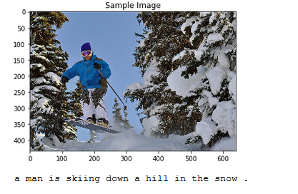

Projects
Following is (an incomplete) list of my projects:
Landmark Detection and Tracking (SLAM):
Implemented SLAM (Simultaneous Localization and Mapping) for a 2 dimensional world. Combining knowledge of robot sensor measurements and movement to create a map of an environment from only sensor and motion data gathered by a robot, over time. SLAM provides a way to track the location of a robot in the world in real-time and identify the locations of landmarks such as buildings, trees, rocks, and other world features. Currently expanding this work for a 3 dimensional world.
[Github: SLAM]
Keep it cool:
Keep it cool is visualization tool that maps NASA's GISTEMP data on a WebGL based globe, and displays the impact of climate change on global mean temperature over the past century. This visualization work was inspired by the work done by Chrome Experiments (WebGL) and people like A. Sweeney, Yoshua Bengio and many others' work in visualizing climate change.
[Github: Keep it cool]
Image captioning:

In this project, a CNN-LSTM encoder-decoder model was used to generate captions for images automatically. A complex deep learning model is used comprising of two components: a Convolutional Neural Network (CNN) that transforms an input image into a set of features - encoding the information in an image into a vector (known as embedding, which is a featurized representation of the image), and an RNN that turns those features into descriptive language.
[Github: Image Captioning]
Facial Keypoint Detection:
 Facial Keypoint detection or Landmark detection implies identifying the various keypoints present on any face. In each training and test image, there is a single face and 68 keypoints, with coordinates (x, y), for that face. These keypoints mark important areas of the face: the eyes, corners of the mouth, the nose, etc. These keypoints are relevant for a variety of tasks, such as face filters, emotion recognition, pose recognition, and so on.
[Github: Facial Keypoint Detection]
Facial Keypoint detection or Landmark detection implies identifying the various keypoints present on any face. In each training and test image, there is a single face and 68 keypoints, with coordinates (x, y), for that face. These keypoints mark important areas of the face: the eyes, corners of the mouth, the nose, etc. These keypoints are relevant for a variety of tasks, such as face filters, emotion recognition, pose recognition, and so on.
[Github: Facial Keypoint Detection]
Neural Style Transfer:
Applying encoded style of images to different images with significantly different feature vectors.

[More examples at: Style Transfer]